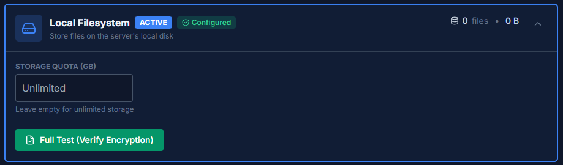
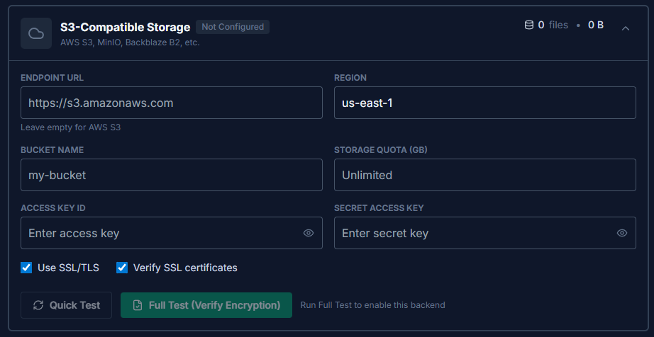
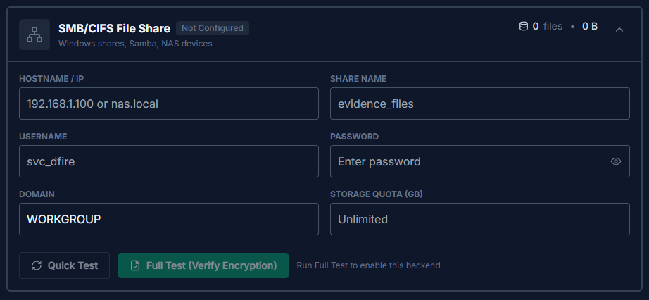

Storage Backends
Configure where DFIRe stores evidence file attachments. All files are encrypted with AES-256-GCM before storage regardless of which backend you choose.
Overview
DFIRe supports three storage backends for file attachments. Storage configuration is managed in Settings > Storage and requires superuser access.
| Backend | Recommended For |
|---|---|
| Local Filesystem | Development, testing, and simple single-server deployments. |
| S3-Compatible Storage | Production (online environments). Scalable, durable, supports multi-instance deployments. |
| SMB/CIFS File Share | Production (air-gapped networks). Enterprise NAS integration, offline environments. |
Production Recommendation: For internet-connected deployments, use S3-compatible storage (AWS S3, MinIO, Backblaze B2, etc.) for reliability and scalability. For air-gapped or isolated networks, use SMB/CIFS file shares with enterprise NAS storage.
Local Filesystem
The default storage backend stores files on the server's local disk. This is the simplest option and requires no additional configuration—it's ready to use out of the box.
Configuration
- Storage Quota (GB): Optional limit on total storage usage. Leave empty for unlimited storage.
Local storage is automatically active on new installations. Click Full Test (Verify Encryption) to verify that file encryption and decryption work correctly.
Docker Deployment
When using Docker, local storage uses the media_data volume. This volume persists across container restarts:
volumes:
- media_data:/app/mediaBackup: Ensure you regularly back up the media_data volume along with your database. See Backup & Recovery for details.
S3-Compatible Storage
The recommended storage backend for production deployments. Works with AWS S3, MinIO, Backblaze B2, Wasabi, DigitalOcean Spaces, and other S3-compatible services.
Configuration Fields
| Field | Description |
|---|---|
| Endpoint URL | Leave empty for AWS S3. For other providers, enter their S3-compatible endpoint URL. |
| Region | Storage region (e.g., us-east-1, eu-north-1). |
| Bucket Name | The bucket to use for storage. Must already exist in your S3 service. |
| Access Key ID / Secret Access Key | Credentials with read, write, and delete permissions on the bucket. |
| Use SSL/TLS | Enable HTTPS connections. Always enable for production. |
| Verify SSL certificates | Validate SSL certificates. Disable only for self-signed certificates in development. |
| Storage Quota (GB) | Optional application-level limit on total storage usage. |
Setup Steps
-
Create a bucket in your S3 service
Use your provider's console or CLI to create a private bucket. Consult your provider's documentation for specific instructions.
-
Create access credentials
Generate an access key with permissions to read, write, list, and delete objects in the bucket.
-
Configure in DFIRe
Enter your endpoint URL (if not AWS), region, bucket name, and credentials.
-
Test the connection
Click Quick Test to verify connectivity, then Full Test (Verify Encryption) to confirm encryption works end-to-end.
AWS S3 Note: Leave the Endpoint URL empty when using AWS S3—DFIRe will automatically connect to the correct AWS endpoint based on the region.
SMB/CIFS File Share
The recommended storage backend for air-gapped or isolated network environments. Works with Windows file servers, Samba, and enterprise NAS devices.
Configuration Fields
| Field | Description |
|---|---|
| Hostname / IP | Server address (e.g., nas.local or 192.168.1.100). |
| Share Name | The network share name (e.g., evidence_files). |
| Username | Service account with read/write access to the share. |
| Password | Password for the service account. |
| Domain | Windows domain name, or WORKGROUP for standalone servers and NAS devices. |
| Storage Quota (GB) | Optional application-level limit on total storage usage. |
Setup Steps
-
Create a dedicated share on your file server
Create a network share dedicated to DFIRe evidence storage. Ensure it's only accessible to authorized systems.
-
Create a service account
Create a dedicated account (e.g.,
svc_dfire) with read, write, and delete permissions on the share. -
Configure in DFIRe
Enter the server hostname/IP, share name, and service account credentials.
-
Test the connection
Click Quick Test to verify connectivity, then Full Test (Verify Encryption) to confirm encryption works end-to-end.
Docker Networking: The DFIRe container must be able to reach the SMB server. If using Docker's default bridge network, ensure proper routing is configured or use host networking mode.
Testing and Activating
DFIRe provides two test options to verify your storage configuration before activation:
| Test | What It Checks |
|---|---|
| Quick Test | Verifies connectivity and basic permissions (can connect, list, and write to storage). |
| Full Test (Verify Encryption) | Complete end-to-end test: uploads an encrypted test file, downloads it, verifies decryption produces the original data, then cleans up. |
After the full test passes, the backend can be activated. The Set as Active button appears once validation succeeds.
Always run the full encryption test before using a new storage backend in production. This ensures files can be properly encrypted, stored, retrieved, and decrypted with your current encryption keys.
Switching Storage Backends
Important: Changing the active storage backend does not migrate existing files. Files uploaded before the change remain in the previous storage location and must stay accessible.
When switching backends:
- Keep the old storage accessible — Existing files will still be read from their original location
- New uploads use the new backend — Only files uploaded after the switch go to the new storage
- Back up before switching — Ensure you have backups of both the database and existing storage
DFIRe does not include built-in storage migration. Choose a storage backend that suits your deployment best when first configuring DFIRe.
Encryption
All file attachments are encrypted using AES-256-GCM before being written to storage, regardless of which backend you use. Files are encrypted at rest and cannot be read without the encryption keys—even if the underlying storage is compromised.
See Application Security for details on the encryption architecture and key management.
Critical: Back up your CREDENTIAL_ENCRYPTION_KEY environment variable immediately after deployment. If this key is lost, encrypted files cannot be recovered regardless of which storage backend you use.
Storage Quotas
Each storage backend supports an optional storage quota, enforced at the application level. When the quota is reached, new uploads are rejected while existing files remain accessible. Deleting files frees up quota space.
Current storage usage is displayed at the top of each storage backend card in the settings page.